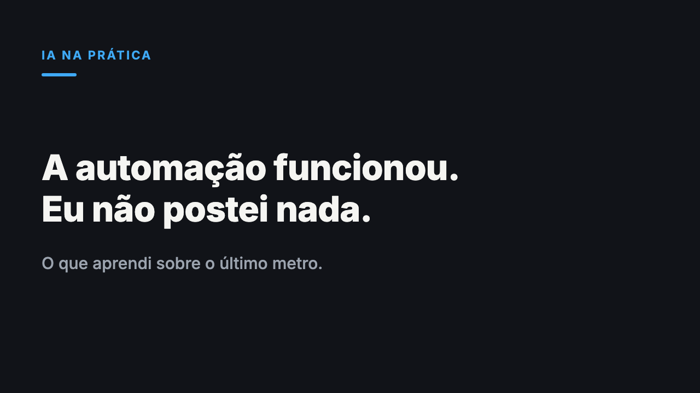

A automação funcionou. Eu não postei nada por quase duas semanas.
1. Abra o editor de artigos
Abrir editor de artigos do LinkedIn2. Título e subtítulo
3. Capa

Baixar capa4. Texto do artigo (cola com a formatação)
Montei um sistema que, toda segunda de manhã, pesquisa um tema, escreve os rascunhos e gera as imagens do meu LinkedIn. Ele funcionou exatamente como desenhei.
Em quase duas semanas, eu não publiquei nada.
Não sou desenvolvedor. Construí isso com IA, aprendendo no caminho, e é por isso que essa falha me interessa tanto: ela não foi técnica.
O que o sistema faz
Toda segunda, ele pesquisa novidades de marketing e IA para usar de gancho, escolhe os temas da semana, escreve os textos seguindo as regras de posicionamento que defini, gera as imagens, salva tudo e me manda uma notificação no celular.
Quando olhei o resultado, havia mais de vinte rascunhos prontos. Nenhum publicado.
Onde quebrou
A notificação dizia para eu revisar o material em um repositório do GitHub. Eu, a pessoa para quem o sistema existe, não sabia que precisava abrir uma pasta de código para pegar um texto.
O sistema estava correto e era inútil. Ele fazia o trabalho da máquina muito bem e deixava o trabalho da pessoa em um lugar onde a pessoa não vive.
Por que a gente erra nisso
Quem constrói pensa no sistema. Quem usa pensa no dia.
Eu desenhei o fluxo do ponto de vista de quem monta: entrada, processamento, saída salva. Para mim, "saída salva em um repositório" parecia o fim. Para quem precisa agir, o fim é "eu sei o que fazer, agora, sem procurar nada".
Automatizamos o que a máquina faz e esquecemos o último metro, o momento em que um humano precisa pegar o resultado e agir.
O que mudei
Troquei o aviso por um lembrete no Google Calendar, no horário em que eu preciso agir, com um link direto para uma página simples. Ela mostra o texto pronto para copiar e a imagem pronta para baixar. Sem pasta, sem repositório, sem procurar.
O resultado do sistema não mudou. O que mudou foi o ponto onde ele encontra a pessoa.
O que continuo fazendo na mão
Aprovar e publicar. São dois motivos.
O primeiro é técnico: testei automatizar a publicação no LinkedIn e o botão de imagem não aceita um envio automático de arquivo. O segundo é de critério: mesmo que aceitasse, eu quero ler antes de qualquer coisa sair com o meu nome.
Automatizar o que é repetitivo e reversível faz sentido. O que é público e difícil de desfazer continua passando por uma pessoa.
Três perguntas antes de automatizar qualquer coisa
- Onde a pessoa que recebe o resultado já está durante o dia? A resposta costuma ser e-mail, calendário ou WhatsApp, e raramente é um painel novo.
- O que acontece se a automação funcionar e a pessoa não agir? Se a resposta for "nada", falta um lembrete no desenho.
- Quanto custa errar em público? Quanto maior o custo, mais perto de um humano a decisão final deve ficar.
Um sistema que gera o trabalho todo e depende de alguém lembrar de ir buscá-lo ainda é um sistema pela metade.
Qual automação sua funcionou perfeitamente na parte técnica e, mesmo assim, não mudou nada no seu dia a dia?
5. Depois de publicar: aviso curto no feed
Montei um sistema que escreve meus rascunhos do LinkedIn toda segunda. Em quase duas semanas, não publiquei nenhum.
A falha não estava na IA. Estava no aviso: ele me mandava abrir um repositório de código para pegar o texto.
Escrevi no artigo o que mudei e as 3 perguntas que faço antes de automatizar qualquer coisa.
#automacao #iaaplicada #marketingdigital